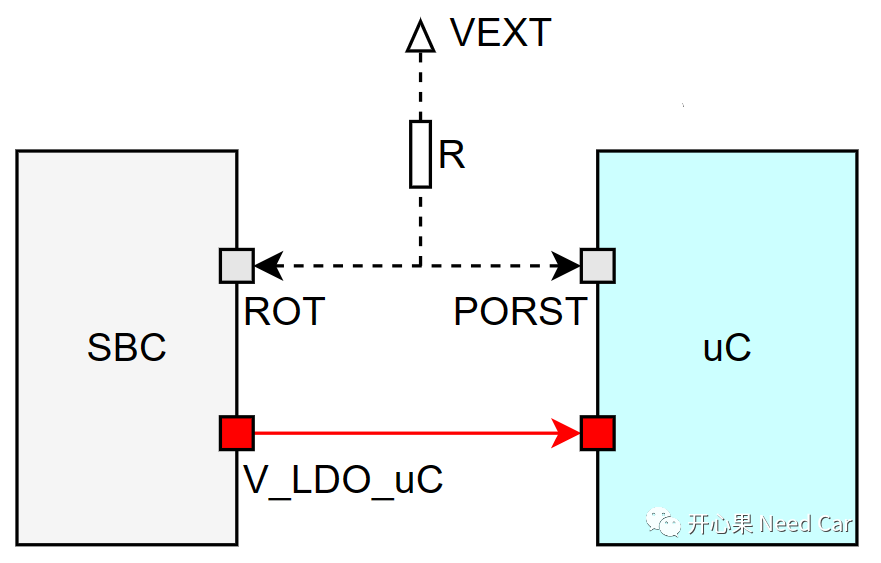
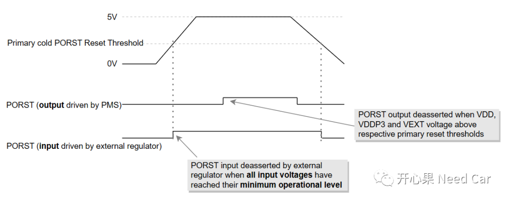
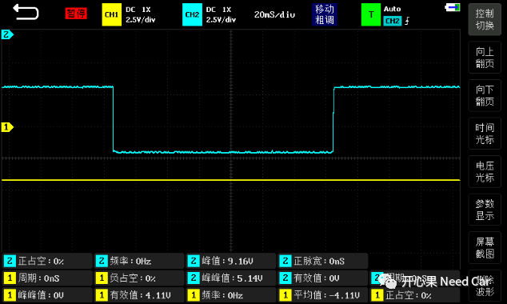
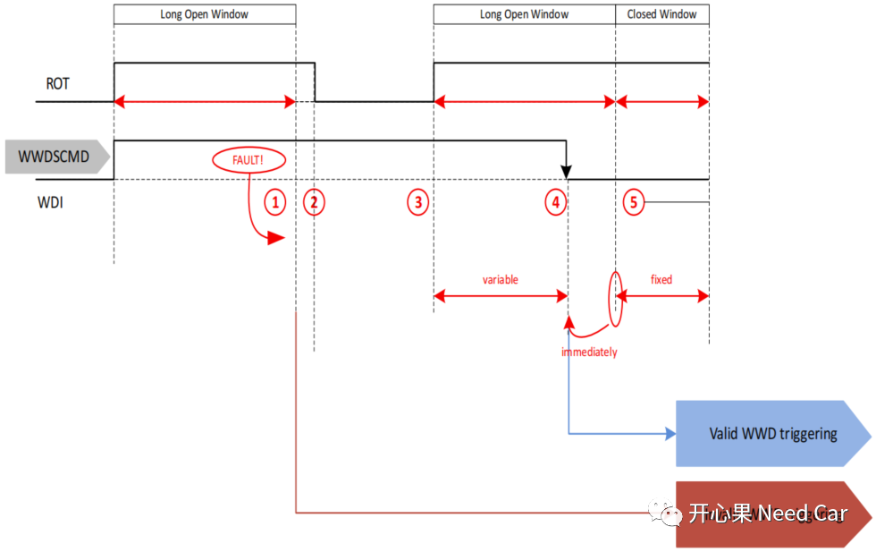

开心果 Need Car · 2023-03-11T08:06:00+08:00 · 微信原文
复位控制是嵌入式开发需要掌握的必备技能，理解单片机的复位，就需要了解所用芯片的复位系统。本文，针对Aurix系列单片机，聊一聊其复位控制单元（RCU，Reset Control Unit）。
1、复位类型
上电复位还可以细分冷启动（Cold Reset）和热启动（Warm Reset）。
Warm Reset：系统的供电依然稳定，系统复位到预定义状态，常见软件复位就属于热启动（eg：System Reset、Application Reset等）；
Cold Reset：系统第一次上电，电压经历了爬升，电压达到稳定状态的一种复位，一般，与电压相关的复位，称为冷启动。
（二）系统复位（System Reset）
此复位虽然会使得系统恢复到预定的初始状态，但是不会复位Power子系统（uC的供电不受影响）、Debug子系统以及复位寄存器。此复位会产生应用复位。注意：此种复位类型会复位时钟系统，影响PLL（Phase Locked Loop，锁相环），即：时钟系统需要重新初始化。
（三）调试复位（Debug Reset）
此复位使得复位系统恢复到初始状态
（四）应用复位（Application Reset）
此复位会使得所有外设、CPU以及部分SCU（System Control Unit）复位到初始状态，应用复位速度快，工程上，听到的Fast Reset属于此复位类型。此种复位可以由内部/外部硬件触发（eg：内狗、外狗、定时器）、也可以由软件触发。
2、PORST
PORST Pin既可以由外部控制，eg：SBC（System Basis Chip），也可以由uC控制，示意如下所示：

如何理解PORST的双向控制呢？比如：当uC执行复位动作时（eg：收到诊断$11 01），会主动拉低PORST Pin，告知SBC，uC要执行复位，注意，uC的供电不受影响；当uC没有按时喂外狗时（假设此外狗在SBC内），SBC会主动拉低ROT Pin，也就是uC的PORST Pin，主动复位uC。
提示：工程开发中，开发阶段，为了方便调试，会先关闭外狗，以便于开发，否则，调试过程中，程序进入断点位置，会因没有及时喂狗而导致程序不断复位，而没有办法调试。
以外部5V供电为例，PORST受外部SBC/内部uC（主要由PMS：Power Management System控制PORST Pin）控制示意如下：


可以看出，一般设计中，PORST Pin的拉低不会影响uC供电，只是使得程序快速复位。
PORST拉低以后对uC的影响是复位，对SBC的影响是什么呢？
以TLF35584为例，讨论uC未有效喂外狗导致的uC复位工况。uC的PORST Pin对应TLF35584的ROT Pin（Reset output）。LOW（Long Open Window）未有效喂狗，ROT拉低，复位uC，示意如下所示：

TLF35584主动拉低ROT Pin的工况还可能是：
工程中，常使用外狗监控uC程序的运行状态，如果程序进入了while(1)程序，会导致喂狗的动作得不到执行，进而使得SBC拉低ROT，复位uC。
往期精彩回顾
CANoe使用：如何配置CAN、Flexray、Lin唤醒帧
Bootloader开发：为什么需要SBL（Secondary Bootloader）?
Autosar EcuM：APP由RUN到POST_RUN浅析